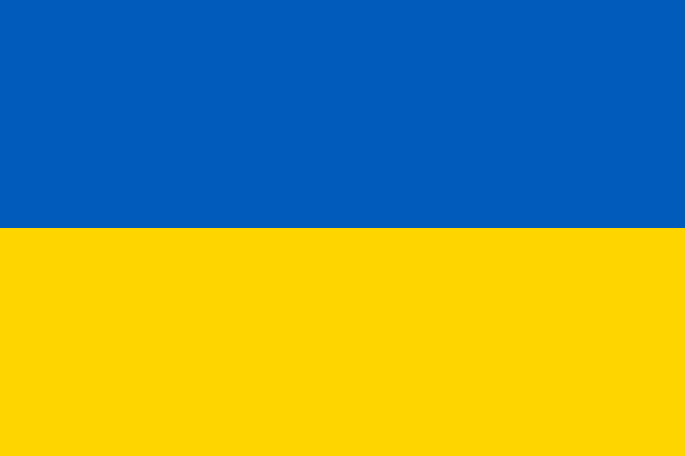
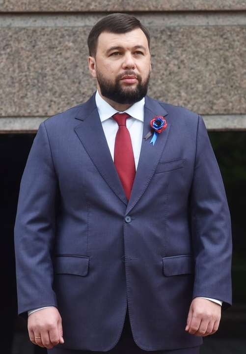
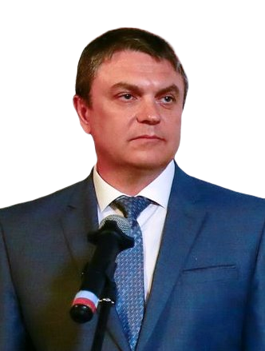

Государства и географические регионы
Постсоветские государства обычно делят на следующие пять групп. Принцип, по которому государство относят к той или иной группе, основывается на географических и культурных факторах, а также на истории взаимоотношений с Россией.
- Россия (в свою очередь состоит из нескольких географических регионов: Восточная Европа, Прибалтика, Северная Азия и Центральная Азия);
- Прибалтика (Северная Европа): Латвия, Литва и Эстония;
- Восточная Европа: Белоруссия, Молдавия и Украина;
- Закавказье (Передняя Азия и Восточная Европа): Азербайджан, Армения и Грузия;
- Центральная Азия: Казахстан, Киргизия, Таджикистан, Туркмения и Узбекистан.
Список стран Постсоветского пространства1
| Страна | Герб | Флаг | Столица | Глава / Президент | Фото | Дата независимости / дата распада СССР | Территория (км2) | Население | Плотность населения (чел./ км2) |
|---|---|---|---|---|---|---|---|---|---|
| СССР |  |
Москва | Михаил Сергеевич Горбачёв | .png) |
26 декабря 1991 | 22 402 200 | 292 610 734 | 13,1 | |
| Российская Федерация | 
 
|

 
|
Москва | Владимир Владимирович Путин | .jpg)
|
12 декабря 1991 | 17 125 191 | 146 781 095 | 8,56 |
| Украина |  |
 | Киев | Владимир Александрович Зеленский | .jpg)
|
24 августа 1991 | 603 549 | 42 248 598 | 73,92 |
| Беларусь |  |
 |
Минск | Александр Григорьевич Лукашенко |  |
25 августа 1991 | 207 600 | 9 475 600 | 47,89 |
| ДНР2 |  |
Донецк | Денис Владимирович Пушилин |  | 7 апреля 2014 (от Украины) | 7 853 | 2 244 547 | 285,82 | |
| ЛНР |  |
 |
Луганск | Леонид Иванович Пасечник |  | 12 мая 2014 (от Украины) | 8 377 | 1 450 000 | 173,09 |
Примечания:
- На это сайте будут представлены страны: Беларусь, Российская Федерация, Украина (с ДНР и ЛНР).
- Независимость ДНр и ЛНР не признают члены ООН